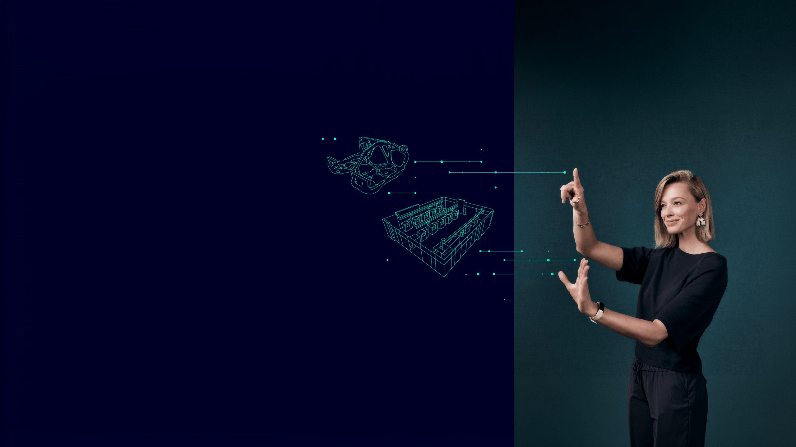

16 ноября Siemens объявила о совместной с AGIBOT разработке: агентный ИИ-процесс (agentic AI workflow) проектирует захват для человекоподобного робота под конкретную задачу. Инженер больше не переделывает каждую модификацию хвата вручную — он описывает предмет и желаемое действие обычным текстом.
Дальше ИИ-агент сам дирижирует инженерными шагами: выбирает подходящий тип захвата, адаптирует геометрию в Siemens Designcenter, запускает симуляцию, проверяет совместимость с интерфейсом робота и корректность захвата, а в финале готовит данные для аддитивного производства. Доступ к функциям инженерного софта агент получает через интеграцию MCP — тот же протокол, которым сейчас связывают языковые модели с рабочими инструментами.
«Вместо ручного проектирования вариантов в трудоёмком процессе агентные процессы могут выполнять инженерные задачи на основе конкретных требований. Аддитивное производство — идеальное дополнение, потому что оно позволяет превращать индивидуальные конструкции в реальные детали», — пояснил Карстен Хойзер, вице-президент Siemens по аддитивным технологиям.
Идея в том, чтобы связать «цифровую нить» от проектирования до цеха: индивидуальный проект должен не только родиться в симуляции, но и быть произведённым гибко. Поэтому Siemens одновременно анонсировала адаптивную производственную ячейку в своей электронной фабрике в Эрлангене — её строят вместе с EOS и AM Solutions. В единую цепочку объединены 3D-печать, автоматизация, постобработка и софт, чтобы партия уникальных захватов печаталась без переналадки под каждую деталь. Там же представят AM I Navigator — стартовый пакет для компаний, которые хотят внедрять промышленный ИИ в аддитивное производство.
Для рынка робототехники это заметный сдвиг: захват под новую задачу перестаёт быть неделями ручной работы инженера-конструктора и превращается в итерацию, которую можно запросить описанием. Ключевой технический мост здесь — MCP: агент лезет не «в картинку», а в реальные функции CAD-системы, симулятора и планировщика печати.
AGIBOT — один из ведущих китайских производителей человекоподобных роботов, а партнёрство с Siemens означает выход их платформы в европейскую промышленную экосистему. Официального анонса российских аналогов агентного проектирования робокистей в открытых источниках нет — в стране робототехника развивается в основном через интеграцию готовых решений.
Показ процесса пройдёт на Formnext 2026 во Франкфурте.